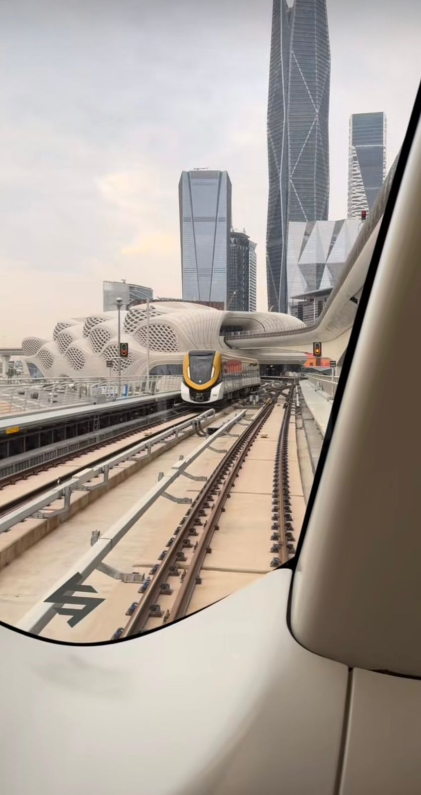
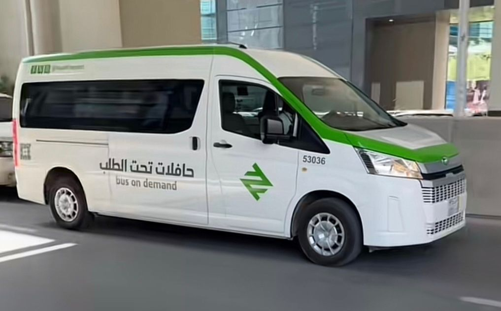
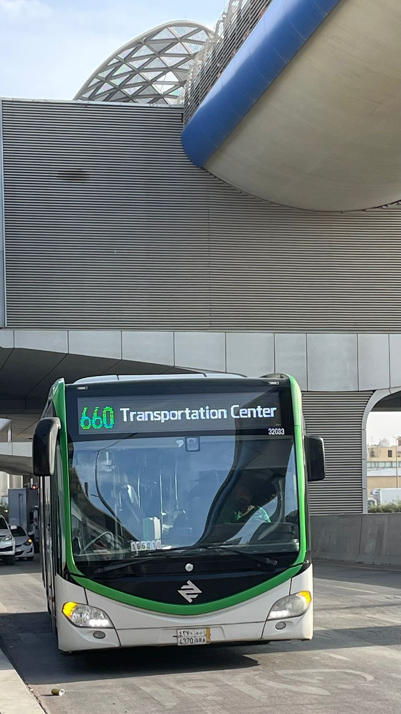

هو نظام نقل سريع يخدم سكان الرياض عاصمة المملكة العربية السعودية، ويشكَّل العمود الفقري لنظام النقل العام في المدينة، و يهدف قطار الرياض إلى إيجاد حلول للسكان للتنقل في مدينة الرياض، إذ يسهم المشروع في تغطية مناطق الجذب المروري العالي كالجامعات والمدارس والمستشفيات ومراكز التوظيف والأنشطة والمجمعات التجارية. يتوزع مسار مترو الرياض على 6 مسارات بستة ألوان(الأزرق، البرتقالي، البنفسجي، الأخضر، الأصفر، الأحمر) ويقدّم المترو خدمات مريحة وآمنة للركاب، مثل التكييف الكامل، والمقاعد المريحة، وشاشات لعرض المعلومات، إضافة إلى أماكن مخصصة للعائلات وذوي الاحتياجات الخاصة. كما توجد تطبيقات وخدمات إلكترونية لشراء التذاكر وتتبع الرحلات بسهولة

كما توجد حافلات تحت الطلب التي تُعد جزءًا مكمّلًا لشبكة المترو، إذ تعمل على نقل الركاب من الأحياء القريبة إلى محطات المترو والعكس، مما يسهل الوصول ويُعزز من كفاءة الخدمة. وتعمل هذه الباصات وفق جداول زمنية دقيقة، وتُعتبر وسيلة مجانية أو رمزية التكلفة للمستخدمين المسجلين في المترو، بهدف ضمان تنقّل مريح ومتكامل داخل المدينة.

تُعد حافلات الرياض إحدى وسائل النقل الحديثة ضمن مشروع النقل العام في المدينة، ويمكن لزوارها استخدامها كوسيلة فعالة. تتميز هذه الحافلات بلونها الأخضر وتصميمها العصري والمريح. تغطي الباصات نطاقاً واسعاً من الرياض، وتتمتع بعدة خصائص تجعلها عملية ومريحة؛ فهي مُكيَّفة بالكامل ومُزوَّدة بكاميرات مراقبة لضمان الأمان، كما تتميز بانضباط مواعيدها ودقتها في الوصول والمغادرة وفق جداول زمنية محددة. يتيح الاعتماد عليها للوصول إلى مختلف الوجهات سهولة وسرعة، ويغني الركاب عن عناء البحث عن مواقف للسيارات. تعمل الحافلات الخضراء تقريباً من الساعة 5:30 صباحاً حتى الساعة 12:00 منتصف الليل. يمكن استخدام بطاقة المترو ذاتها لدخول الحافلات، وتبدأ الأجرة من 4 ريالات. وتُتيح المنظومة إمكانية استخدام التذكرة نفسها خلال ساعتين للانتقال بين المترو والحافلات دون دفع إضافي. تُعد هذه الميزة جزءاً من منظومة النقل المتكاملة التي تشجع السكان على الاعتماد على النقل العام، مما يساهم في تقليل الازدحام ودعم أهداف رؤية المملكة 2030 في تعزيز النقل الحضاري والمستدام.

تُشكل تطبيقات النقل جزءًا حيويًا من الحياة اليومية في الرياض، وتُعد خيارًا مرنًا ومريحًا للزوار على حد سواء. تتيح هذه التطبيقات سهولة الحجز، والمتابعة المباشرة للرحلة، وتوفر خيارات دفع متعددة.
يوجد في الرياض عدد من شركات التأجير الموثوقة التي تقدِّم سيارات متنوعة تناسب جميع الميزانيات، ويمكن للزوار الحجز بسهولة عبر مواقعها الإلكترونية.